Conheça nossos
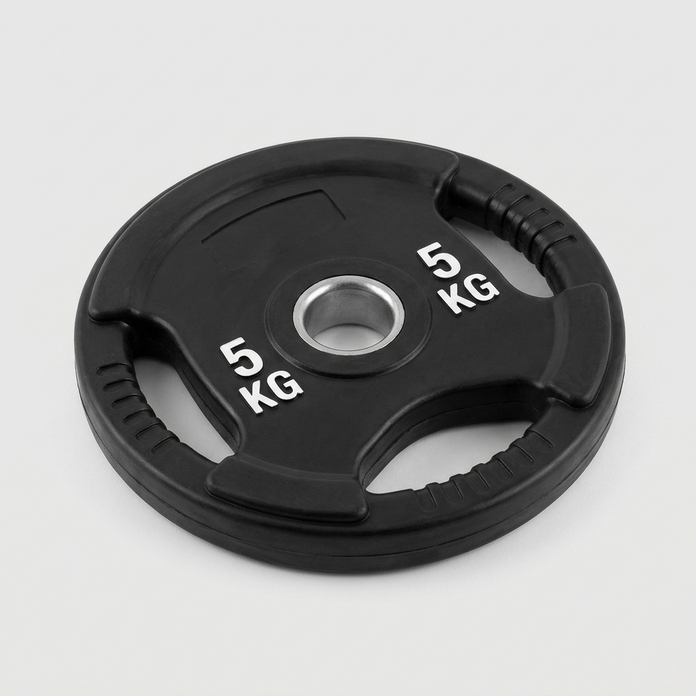
Ideal para aquecimentos, exercícios educativos e progressões leves. Revestimento que protege o piso e reduz o ruído no seu treino.
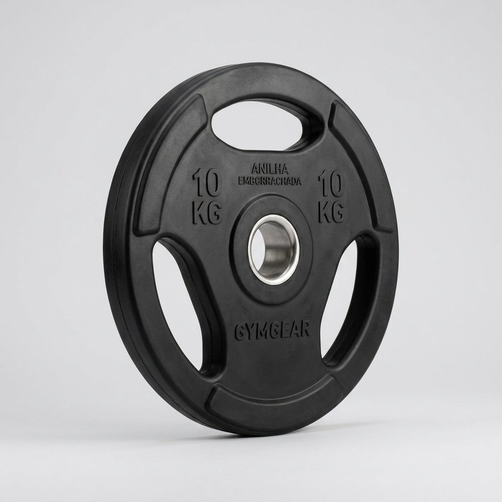
O equilíbrio perfeito entre carga e controle. Essencial para construir força em treinos diários com mais segurança e durabilidade.
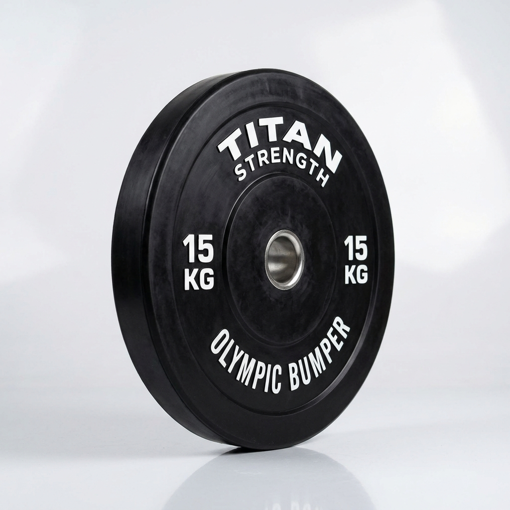
Desenvolvida para alto impacto. Perfeita para LPO e treinos intensos, oferecendo absorção de choque superior e padrão olímpico.
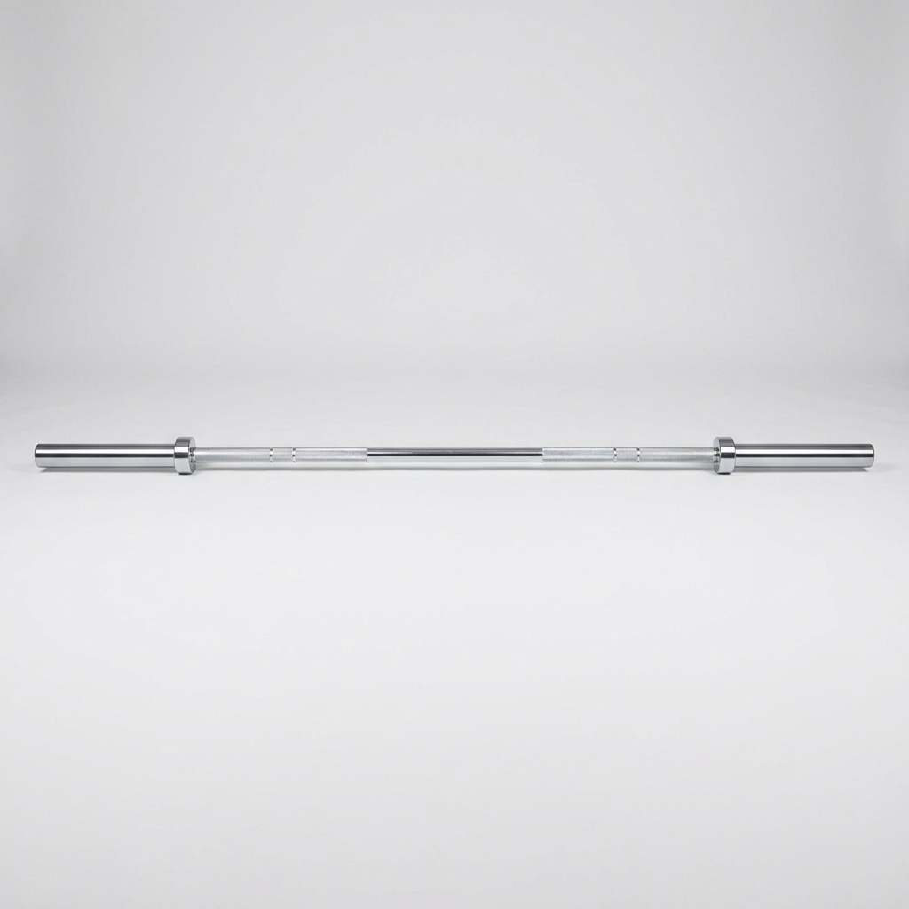
Versátil e resistente, ideal para organizar seu espaço de treino em casa ou na academia. Ótima para supinos, agachamentos e roscas.
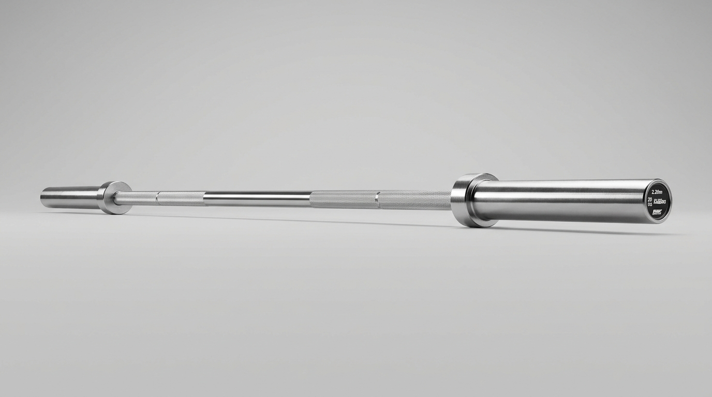
Padrão profissional para quem busca alta performance. Suporta grandes cargas com rolamento suave para movimentos explosivos e seguros.
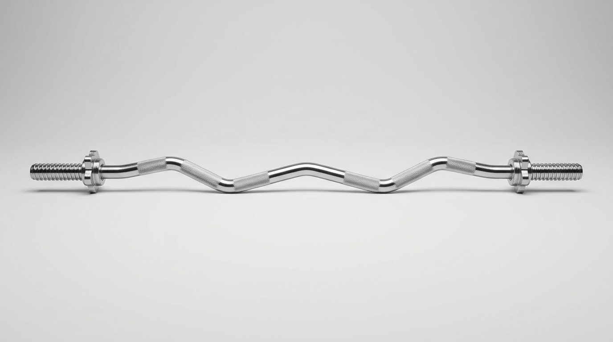
Design anatômico projetado para reduzir a pressão nos punhos. A escolha certa para isolar bíceps e tríceps com conforto.
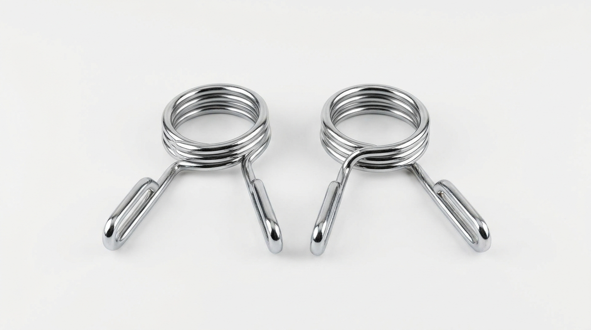
Segurança em primeiro lugar. Trava rápida e prática para manter suas anilhas firmes durante qualquer rotina de treino.
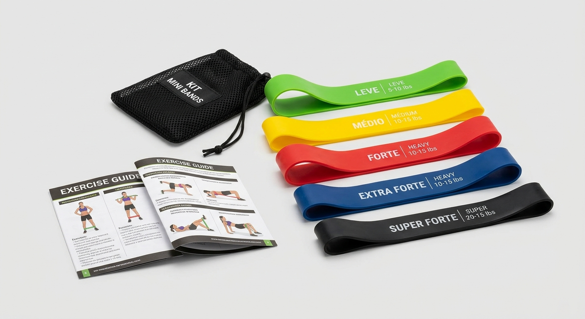
Potencialize a ativação muscular, mobilidade e reabilitação. Leves e portáteis para treinar onde você estiver.
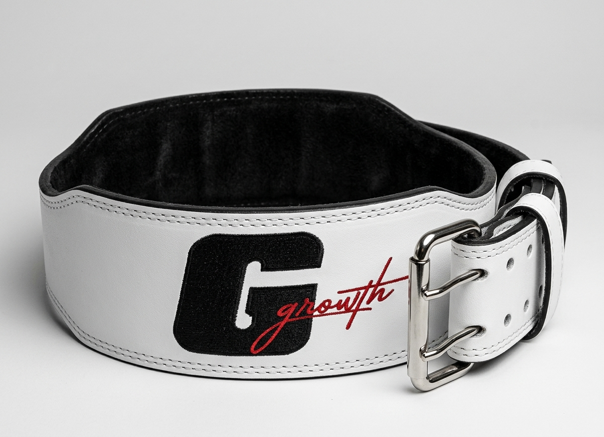
Suporte intra-abdominal e estabilidade máxima para suas cargas mais pesadas. Proteção essencial para a região lombar.
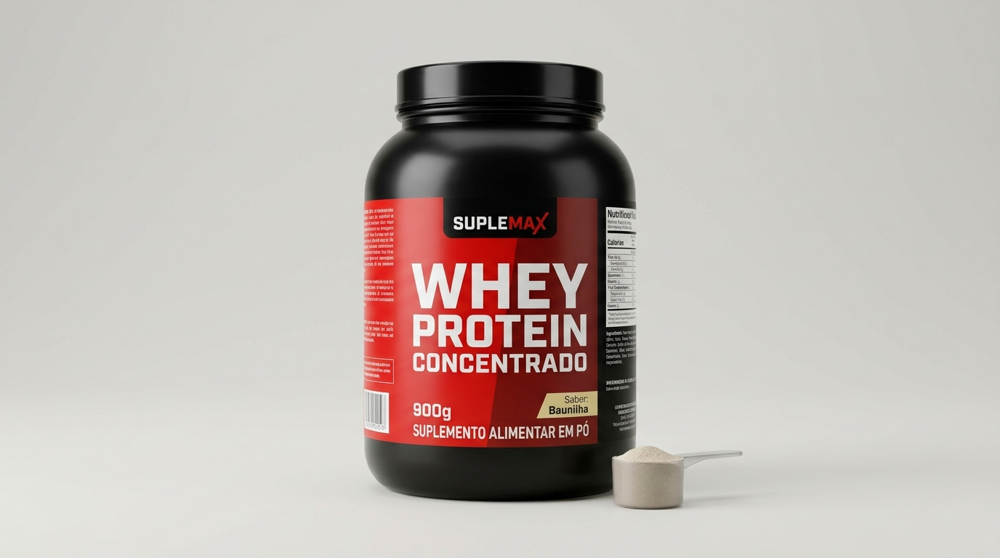
Aporte proteico de alta qualidade para otimizar a recuperação muscular e apoiar o ganho de massa magra no pós-treino.
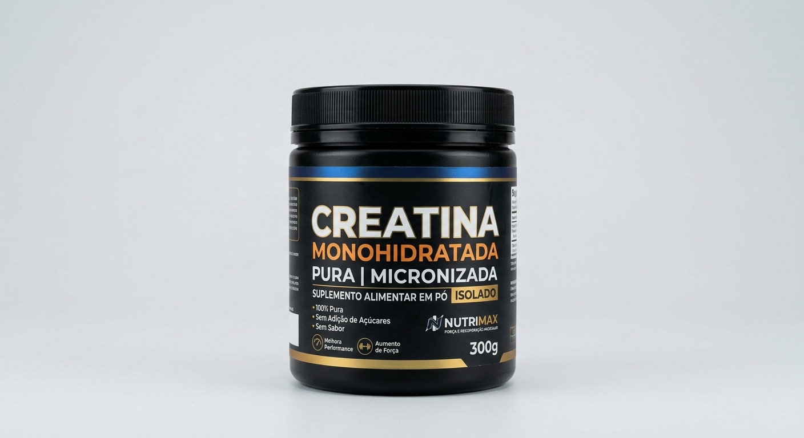
Aumente sua força, explosão muscular e desempenho nos treinos de alta intensidade. O suplemento indispensável para seus resultados.